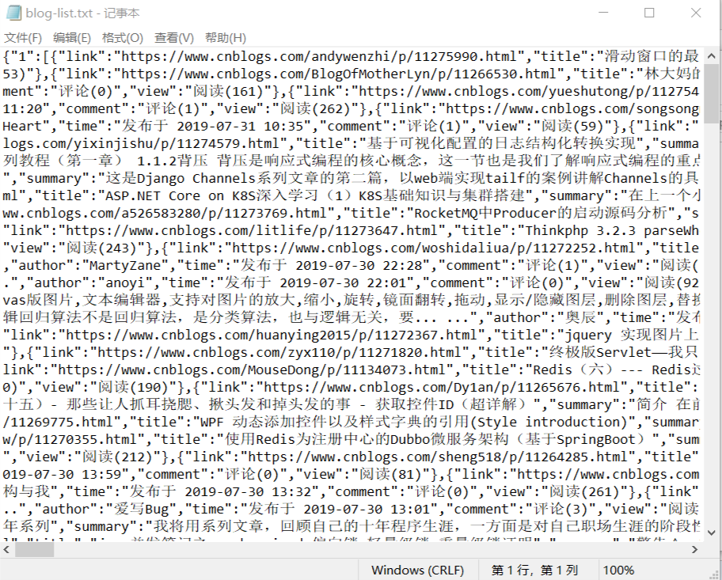

声明：本人第一次写博客，文中有什么错误之处还请指出，本例本着学习的精神，拿博客园做了一个例子，也不知道博客园有没有这块的规定，如有不当之处，望海涵！
1、首先打开博客园首页https://www.cnblogs.com/，按F12或Ctrl+Shift+I，然后打开network（网络）选项卡，连续翻页，分析翻页数据，发现翻页通过AJAX获取数据。
2、获取PostList.aspx的URL。
3、不同的页面请求的文件相同，那么服务器怎么知道应该返回哪个页面的数据？答案是根据AJAX发送到服务器的数据不同。
只要改变PageIndex的值就能获取到不同的页面数据了。
4、分析DOM元素。
本例使用node.js自带的http模块和第三方superagent、cheerio模块。
新建并进入项目文件夹，安装模块。
npm install superagent
npm install cheerioSuperAgent使用文档
简书 https://www.jianshu.com/p/1432e0f29abd
官方 http://visionmedia.github.io/superagent
cheerio使用文档
简书 https://www.jianshu.com/p/629a81b4e013
1、新建index.js文件。
2、本人水平有限，感觉异步IO会打乱写入文件的顺序，所以每个页面写入完成再继续访问下一个页面。
//引入核心模块
const fs = require('fs');
//引入第三方模块
const superagent = require('superagent');
const cheerio = require('cheerio');
let i=1;//页数
getURLDataAndWriteFile(i);
/**
* @description desc 获取页面数据并写入到文件
* @param i desc 页数
*/
function getURLDataAndWriteFile(i){
superagent.post("https://www.cnblogs.com/mvc/AggSite/PostList.aspx")
.send({CategoryId: 808, //发送数据到服务器
CategoryType: "SiteHome",
ItemListActionName: "PostList",
PageIndex: i, //根据i获取相应的页面数据
ParentCategoryId: 0,
TotalPostCount: 4000})
.end((error,response)=>{ //页面访问失败返回error，response为服务器返回的数据
if(error){
console.log(`访问第${i}页失败！`+error);
}else{
//调用函数，并以键值对的形式
let blogList = {[i]:getBlogList(response)};
//追加数据到blog-list.txt文件，如果不存在则创建
//blogList为JSON对象，要把它转换为字符串
fs.appendFile("blog-list.txt",JSON.stringify(blogList),function(error){
if(error){
console.log(`第${i}页数据写入文件失败！${error}`)
}else{
console.log(`第${i}页数据写入文件成功！`);
//爬取200页
if(++i<=200){
//再次调用该函数
getURLDataAndWriteFile(i);
}
}
});
}
});
}
/**
* @description desc 获取一个页面的博客标题、链接、概要等等
* @param response desc 服务器返回的数据
* @return Array 返回博客列表的数组
*/
function getBlogList(response){
let blogList = []; //新建空列表，用来放一个页面的博客
let $ = cheerio.load(response.text);
//获取所有class="post_item_body"的元素，然后遍历每一个元素
$('.post_item>.post_item_body').each((index,element)=>{
//用键值对存放数据
let blog = {
//trim()方法用于删除字符串的头尾空格
link:$(element).find('.titlelnk').attr('href').trim(),
title:$(element).find('.titlelnk').text().trim(),
summary:$(element).find('.post_item_summary').text().trim(),
author:$(element).find('.lightblue').text(),
time:$(element).find('.post_item_foot').clone().children().remove().end().text().trim(),
comment:$(element).find('.article_comment>.gray').text().trim(),
view:$(element).find('.article_view>.gray').text().trim()
}
//添加到数组尾部
blogList.push(blog);
});
return blogList;
}3、测试
进入项目文件夹，后输入
node ./index.js
一个简单的node.js爬虫就完成了。